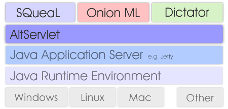

Alt Framework OverviewThe Alt Framework Core is made up of three components: SQueaL, Onion ML, and Dictator. Under the hood lies the AltServlet engine.  CoreSQueaL is in charge of defining and handling content. It provides a means of defining, managing, and interfacing with databases. Onion ML is in charge of defining and handling design. It provides a means of defining, organizing, and generating pages from xml files. Dictator is in charge of defining and handling requests. It provides a means of defining, and organizing site structure. Under the HoodAltServlet is a Java Servlet in charge of connecting Java to JavaScript and providing the foundation for the Alt Framework Core modules to be developed. Alt Servlet can run on any Java Application Server, such as Jetty. |
|
| page last updated: Thursday, February 14, 2008 |